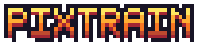

Gizlilik ve çerez politikası
Son güncelleme: [TARİH]
Kim olduğumuz
PixTrain, [ALAN ADI] adresinde yayınlanan ücretsiz bir tarayıcı oyunudur. Bu sayfa, oyunu oynarken hangi verilerin işlendiğini 6698 sayılı Kişisel Verilerin Korunması Kanunu (KVKK) ve Avrupa Birliği Genel Veri Koruma Tüzüğü (GDPR) kapsamında açıklar. İletişim: [E-POSTA ADRESİ].
Oyunun kendisi
Hesap açman gerekmez; ad, e-posta veya konum istemeyiz. Oyun ilerlemen (altın, yıldızlar, açılan hatlar, trenler) yalnızca bu tarayıcının yerel depolamasında saklanır ve bize gönderilmez. Tarayıcı verilerini silersen ilerleme de silinir.
Reklamlar
Oyunun masrafları reklamla karşılanır. Reklamları Google (Google AdSense ve Google H5 Games Ads) sunar:
- Banner reklamlar menü ekranlarında görünür; sefer sırasında gösterilmez.
- Ödüllü reklamlar yalnızca sen istersen açılır (ör. "Yola devam", "Kazancı 2× al"). İzlemek zorunlu değildir ve ödüller oyun içi altın ve yakıttır; gerçek para değeri yoktur.
Google ve iş ortakları, reklam göstermek ve ölçmek için çerezler ya da benzer teknolojiler kullanabilir. Bu, önceki ziyaretlerine dayalı (kişiselleştirilmiş) reklamları içerebilir. Avrupa Ekonomik Alanı, Birleşik Krallık ve İsviçre'den gelen ziyaretçilere ilk açılışta Google'ın onay penceresi gösterilir; seçimini oradan yapabilir ve sonradan değiştirebilirsin.
- Google'ın verileri nasıl kullandığı: policies.google.com/technologies/partner-sites
- Kişiselleştirilmiş reklamları kapatmak: adssettings.google.com
- Diğer reklam ağlarından çıkmak: aboutads.info/choices
Sunucu kayıtları
Oyunu barındıran hizmet ([BARINDIRMA, ör. GitHub Pages]) güvenlik amacıyla IP adresi ve tarayıcı bilgisi gibi teknik kayıtlar tutabilir. Bu kayıtlara biz erişmeyiz.
Çocuklar
Oyun her yaştan oyuncuya uygundur ancak 13 yaşından küçük çocuklara yönelik olarak tasarlanmamıştır ve bilerek çocuklardan kişisel veri toplamayız.
Hakların
KVKK'nın 11. maddesi ve GDPR kapsamında verilerine erişme, düzeltme, silme ve işlemeye itiraz etme hakların vardır. Bizim tuttuğumuz bir kişisel veri yoktur; Google'ın tuttuğu veriler için yukarıdaki bağlantıları kullanabilir ya da bize [E-POSTA ADRESİ] adresinden yazabilirsin.